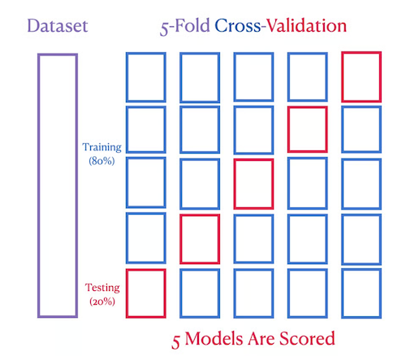

Zápočtový úkol 4#
Uvažujte následující situaci. Provádíte experiment a naměříte sadu dat. Bohužel jste ale ztratili vaše teoretické poznámky k experimentu a již nevíte, jakým zákonem/vzorečkem se data řídí. Nedokážete již tedy proložit data odpovídající modelovou funkcí a získat parametry tohoto modelu. Přesto nezačnete zoufat a tuto patálii vyřešíte pomocí numerických nástrojů na počítači. Záchranou je pro vás, že jste si zapamatovali, že se data řídí polynomiální závislostí. Již ale neznáte přesný stupeň onoho polynomu.
Definice úlohy:
Uvažujte \(N=100\) dvojic \((x_i, y_i)\) tvořící experimentální data. Data získáte pomocí funkce (xdata, ydata) = proved_experiment() (implementované v binárním souboru experiment.pyc), která volí náhodný stupeň polynomu \(m \in [0,10]\), pro který vygeneruje odpovídající náhodná data s přidaným gausovským šumem (podle normálního rozdělení). Funkce vrací dva vektory/pole \(\vec{x}\) a \(\vec{y}\). S každým novým voláním této funkce jsou vygenerována data pro jiný modelový polynom!
Splňte následující dvě části úkolu:
1. ČÁST ÚKOLU
Vygenerujte experimentální data pomocí připravené funkce
proved_experiment().Rozdělte data na trénovací a testovací v poměru 3:1 (testovacích dat je třeba méně). Rozdělte data do skupin náhodně tak, aby jste výběrem nezanesli nechtěnou informaci do testovací množiny a aby byly data přibližně rovnoměrně rozprostřeny v celém intervalu v obou skupinách! To zajistí přesnější ohodnocení natrénovaného modelu.
Natrénujte/spočítejte parametry modelu s využitím trénovacích dat.
Aplikujte model na testovací data a spočítejte chybu, které se model na těchto datech dopouští - účelová funkce \(S\) (viz cvičení).
Opakujte kroky 3. a 4. pro různé stupně polynomu a na základě chyby testovacích dat určete parametry a ideální stupeň polynomu modelu.
Cílem je pro libovolné zavolání funkce experimentu najít ideální model, který odpovídá datům nejlépe. Funkce proved_experiment() je již importována v připravené buňce v tomto notebooku, stačí ji zavolat. Pokud chcete řešit úlohu lokálně na osobním počítači, je třeba si spolu s notebookem stáhnout soubor experiment.pyc ze složky ukoly/.
Vykreslete závislost testovací chyby na stupni modelového polynomu. Vykreslete vygenerované data a funkci optimálního modelu.
Můžete pozorovat, že v některých případech vychází stupeň polynomu nečekaně vysoký! To je způsobeno tím, že ohodnocení modelů není vždy optimální (viz Bonus a následující poznámky). Přesto výsledek není úplně špatně, jelikož koeficienty u členů vysokého řádu jsou velmi malé. A při jiném výběru testovací množiny již může vyjít správný stupeň polynomu, kterému odpovídají naměřená data. Zkuste proto spustit výběr a trénování několikrát a vyhodnotit správný stupeň polynomu. Nebo se podívejte na 2. část úkolu.
2. ČÁST ÚKOLU
Upravte krok 2. tak, že místo jednoduché validace použijete pokročilejší křížovou validaci (cross validation). Použijte například k-fold křížovou validaci (viz následující poznámky). Tato metoda poskytuje efektivnější ohodnocení modelu.
Srovnejte výsledek jednoduché a křížové validace.
Validace - rozdělení dat na trénovací a testovací části - se běžně používá při modelování dat. Je to základní nástroj pro ohodnocení například neuronových sítí, které představují obecné zobrazené mezi vstupními parametry (xdata) a daty (ydata).
Princip spočívá v balacování mezi přetrénováním (oversampling) a podtrénováním (undersampling - bias). Tato myšlenka se také nazývá bias-variance tradeoff.
Když bychom volili větší a větší stupeň polynomu, podaří se nám nafitovat model datům čím dál přesněji. Pro volbu \(m=N\) se dostáváme k interpolaci - fit bude procházet všemi data pointy přesně. Dopustíme se ale tzv. přetrénování, jelikož bude model v datech hledat více vlastností/stupnů volnosti/více křivosti než v nich je. Pak když použijeme model na predikování nových dat, bude příliž citlivý na šum v hodnotách \(x\).
Naopak pokud zvolíme příliž nízký stupeň polynomu, nebude model schopný zachytit podstatný charakter schovaný v datech a bude se dopouštět velké chyby z důvodu neznalosti (bias). Takový model není sice citlivý na šum, ale je zpočátku nepřesný.
Díky využití části dat, na kterých model netrénujeme, lze model otestovat a získat hodnocení, jak si model vede na nových, předem neznámých datech. Když nalezneme minimum chyby na testovacích datech, dostaneme ideální tvar modelu.
Ke 2. části úkolu:
Křížová validace (cross-validation) je pokročilejší technika rozdělení dat na trénovací a testovací. I když rozdělujeme data náhodně do obou množin, každý výběr zanese do testovací množiny určitou informaci, která může ovlivnit ohodnocení modelů.
Například můžeme uvažovat náhodný výběr testovací množiny, jejíž data pointy budou tvarově odpovídat určitému polynomu řádu \(p\). Data se ve skutečnosti řídí polynomem menšího stupně \(q < p\). Jelikož ale hodnotíme natrénovaný model pomocí testovací množiny blízké polynomu stupně \(p\), bude modelový polynom stupně \(p\) zvýhodněn oproti stupni \(q\). A tedy můžeme získat nepřesný výsledný model.
V opačném případě testovací množina nemusí zachytit určitou vlastnost, která se v datech skrývá. Uvažujme například polynom vysokého řádu \(q\), kterému odpovídají naměřená data. Náhodně je vybrána testovací množina, která velmi řídce pokrývá část intervalu, kde polynom vysokého řádu prudce roste. Tím naopak chybí v testovací datech dostatek informace o datech a budou upřednostovány modelové polynomy nižšího řádu \(p < q\), než je skutečný řád.
V případě, kdy máme dostatek dat a rozdělujeme data náhodně, bude pro nás zásadní spíš první případ. Tedy přetrénování dat důsledkem neideálního výběru testovací množiny.
Křížová validace se snaží potlačit zanesení testovací množiny tak, že provede výběr opakovaně. Způsobů opakovaného rozdělení dat na trénovací a testovací je mnoho. Zde si popíšeme jeden z nejpoužívanějších.
K-fold cross-validation
O této metodě se podrobně můžete dočíst například zde, kde uvidíte i použití v praxi s využitím vhodných knihovních funkcí.
Tato metoda slouží k nalezení vhodné volby tzv. hyperparametrů modelu. V našem případě je to stupeň modelového polynomu. Obecně to může být parametr ovlivňující řád nebo tvar modelu (hloubka neuronové sítě atd.).
Kroky k-fold křížové validace jsou následující:
Náhodně zamícháme data, aby nebyly seřazená podle hodnoty parametru (
xdata) nebo jiného pravidla.Rozdělíme na \(k\) podmožin a zvolíme hodnotu \(p\) řádu modelového polynomu (hyperparameter).
Provedeme trénování a otestování modelu \(k\) krát tak, že testovací množinou bude vždy podmnožina \(k\) a zbytek podmožin bude sloužit jako trénovací množina (viz následující obrázek).
Jako finální ohodnocení modelu vezmeme průměr jednotlivých \(k\) hodnocení z iterací křížové validace.
Nakonec stačí již porovnat výsledná hodnocení pro modely různých řádů a určit optimální řád modelového polynomu, podle kterého se řídí naměřená data.
Poslední krok je zjistit parametry modelu - koeficienty polynomu s optimálním řádem. Jelikož již nepotřebujeme model hodnotit, stačí natrénovat model onoho řádu znovu na všech datech. Díky křížové validaci známe přesně řád polynomu a nemůžeme se tedy v naší úloze již dopustit přetrénování. Každý další data point již jen zpřesňuje znalost parametrů modelu. Pokud bychom chtěli znát míru přesnosti výsledného modelu, je třeba využít testovacích dat.

Tímto způsobem je každý data point použit právě jednou na trénování a testování jednoho z modelů. Opakovaným výběrem zajistíme objektivnější hodnocení modelu a tím zpřesníme výběr nejlepšího modelu, kterému by data měla odpovídat.
Import funkce experimentu:#
import numpy as np
import matplotlib.pyplot as plt
JupyterHub
from experiment import proved_experiment
def proved_experiment_JupyterHub():
return proved_experiment()
Windows a Linux:
import subprocess
def proved_experiment_Windows():
# USE THIS FUNCTION FOR WINDOWS
# returns xdata, ydata
subprocess.run(["experiment.exe"], capture_output=True) # zavolani binarniho souboru experiment.exe - ten ulozi vygenerovana data do experimentData.npy
data = np.load('experimentData.npy') # nacteni vygenerovanych dat
return data[0, :], data[1, :]
def proved_experiment_Linux():
# USE THIS FUNCTION FOR LINUX
# returns xdata, ydata
subprocess.run(["./experiment"], capture_output=True) # zavolani binarniho souboru experiment.exe - ten ulozi vygenerovana data do experimentData.npy
data = np.load('experimentData.npy') # nacteni vygenerovanych dat
return data[0, :], data[1, :]
Otestování funkčnosti generování dat. Měla by fungovat právě jedna z následujících možností podle toho, v jakém operačním systému pracujete:
JupyterHub - použijte
proved_experiment_JupyterHub()
xdata, ydata = proved_experiment_JupyterHub()
plt.scatter(xdata, ydata);
Windows - použijte
proved_experiment_Windows()
xdata, ydata = proved_experiment_Windows()
plt.scatter(xdata, ydata);
Linux/JupyterHub - použijte
proved_experiment_Linux()
xdata, ydata = proved_experiment_Linux()
plt.scatter(xdata, ydata);
Řešení úlohy:#
1. Část úkolu#
Vygenerování dat
## DOPLŇTE ##
Rozdělení na trénovací a testovací množinu
Pro rozdělení dat na trénovací a testovací množinu můžete použít tyto dvě možnosti:
Metodu
train_test_split()z knihovnysklearn.model_selection, která automaticky při výběru náhodně zamíchá data.Kombinaci funkcí
np.random.choice()anp.setdiff1d()pro výběr indexů prvků do odpovídajících množin.Pro křížovou validaci lze použít například třídu
KFoldz knihovnysklearn.model_selection. Funkcesplit()zavolaná na instanci třídyKFoldvrátí seznam \(k\) dvojic indexů prvků z trénovací a testovací množiny (viz příklad v dokumentaci třídy).
## DOPLŇTE ##
Trénování a testování modelu na datech pro různé stupně polynomu
## DOPLŇTE ##
Výběr nejlepšího modelu a stupně modelového polynomu + vizualizace výsledku
## DOPLŇTE ##
2. Část úkolu#
Rozdělení na trénovací a testovací množinu - křížová validace
Pro rozdělení dat pomocí křížové validace použijte například třídu KFold z knihovny sklearn.model_selection. Funkce split() zavolaná na instanci třídy KFold vrátí seznam \(k\) dvojic indexů prvků z trénovací a testovací množiny (viz příklad v dokumentaci třídy).
## DOPLŇTE ##
Výběr nejlepšího modelu a stupně modelového polynomu + vizualizace výsledku
## DOPLŇTE ##